众说操作手册
Windows 桌面版 · 1.0.1 · 图文入门 · 更新于 2026-11-08
第一次用众说，可以跟着本手册做一次：打开项目 → 添加 AI → 发消息 → 看回复。本手册用“读书会筹备”举例，你可以换成自己的工作、资料或代码项目。
怎么看图： 截图中的蓝色 ①②③ 标出了点击位置，下面的步骤与编号对应。打开 设置 → 帮助与关于 → 操作手册，随时可以回来查。
1. 第一次打开：从一个项目开始
本版本仅提供 Windows 安装包，不提供远程访问入口。安装目录完整路径请保持在 180 字符以内，数据目录在 240 字符以内。
运行下载的 Zhongshuo-Setup-…-x64.exe，按安装向导完成后，从开始菜单或桌面的 众说 打开。无需另外安装 Node.js。再次打开会回到已有窗口。
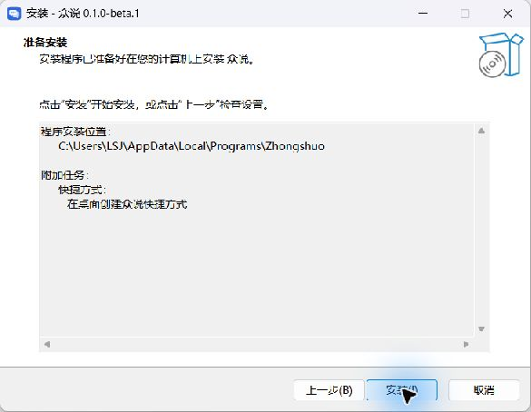
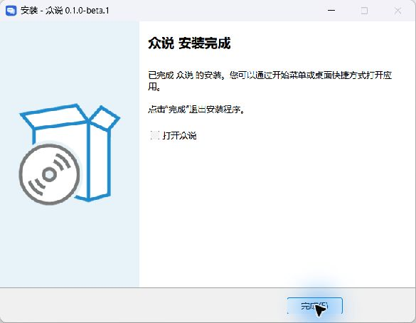
安装版默认把聊天、任务和设置保存在 %LOCALAPPDATA%\Zhongshuo\data；升级或卸载程序会保留这些数据。旧便携版的数据通常位于 %APPDATA%\zhongshuo，不会自动导入。先正常退出旧程序，再按 第 12 章 使用已有数据或备份恢复。
升级前请先从系统托盘右键选择 退出众说，等待后台任务结束后再运行安装器。窗口右上角的 × 只会隐藏窗口。众说仍在运行时，安装器会停止安装，保留当前程序。
打开众说后，先选择你要工作的文件夹。这个文件夹在众说里叫作 项目。
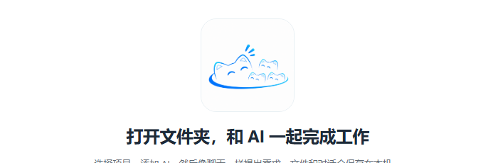
- 点图中 ① 打开文件夹。
- 在弹出的窗口中，选择自己的工作文件夹。例如，先新建一个“读书会筹备”文件夹，把活动资料放进去，再选择它。
- 选择后，左侧会出现项目名和房间。接着按 第 3 章添加 AI，然后 发出第一条消息。
完成后会看到： 项目出现在左侧，点击房间就能进入聊天页面。
以后再打开众说，在左侧点原来的项目和房间，就能继续之前的聊天。
先认识三个词
| 界面上的名称 | 可以这样理解 | 例子 |
|---|---|---|
| 项目 | 一份工作及其文件夹 | 读书会筹备 |
| 房间 / 对话池 | 这份工作里的一个讨论区域 | 活动筹备、资料整理 |
| 对话串 | 围绕一件具体事情的来回讨论 | “整理活动安排”这件事的要求、回复和追问 |
最小化和退出
- 点窗口右上角的 —：收起窗口，AI继续工作。
- 点右上角的 ×：窗口收到 Windows 系统托盘，AI 继续工作。
- 单击托盘中的众说图标可重新打开窗口；右键可以打开任务看板、成员与 AI 设置、待我处理或设置。需要完全关闭时，右键选择 退出众说。
2. 认识界面，切换项目和房间
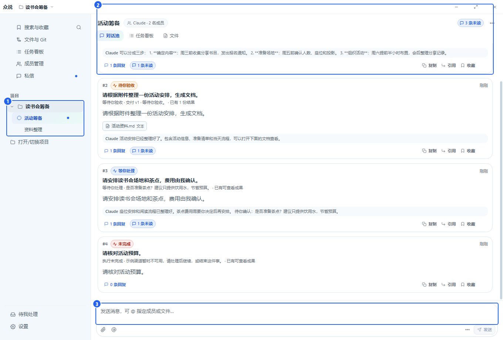
- ① 左侧项目和房间：点房间名称切换讨论区域。不同项目分别保存各自的聊天和文件。
- ② 中间卡片：每张卡片对应一件事。点卡片或下面的回复数，打开它的完整对话。
- ③ 底部输入框：在这里交代一件新的事情。
切换项目： 点击左侧项目名称；在私信或成员管理页，会进入对应项目的同类页面。项目名称前的小箭头只负责展开、收起房间列表，也可以直接点击房间进入聊天。要打开新项目，点左侧 工作区 右侧的按钮，再选择文件夹。
切换后，其他已展开项目的房间仍保留。房间列表读取失败时会显示 重试，并保留上次读到的房间；不会把读取失败显示为“暂无房间”。同一项目已经打开的房间可以直接切换，原草稿分别保存。
项目或房间名称较长时会省略尾部，鼠标停留可查看完整名字。项目右侧的 ⋯ 和 ＋ 与名称分开占位，不会盖住名字；也可用键盘 Tab 移到这些按钮。
置顶常用房间： 鼠标移到房间上，直接点右侧的 图钉 按钮。它会移到左侧 项目 列表上方的 置顶 区，并显示所属项目；再次点图钉会回到原项目下，重启会保留置顶。
侧栏展示项目的房间总数超过20个时，各项目的普通房间默认显示5个。点击列表底部的 显示更多 每次再显示10个，全部显示后按钮消失；总数20个及以下全部显示。收起再展开项目会恢复默认显示数量，置顶区单独显示。
房间名称前的图标表示当前工作状态。同一房间有多种状态时，优先显示更需要关注的一项，鼠标悬停可看各状态数量。
| 图标 | 状态 | 含义 |
|---|---|---|
| 三角播放符号 | 执行中 | AI 正在执行任务 |
| 时钟 | 排队中 / 等待协作 | 等待开始执行，或协调者等待同伴；悬停可区分 |
| 手掌 | 等你处理 | 需要你输入或确认 |
| 眼睛 | 待验收 | 成果已生成，等待你验收 |
| 方形 | 停止中 | 已请求停止，正在等待执行退出 |
| 八角形 | 受阻 | 执行失败、结果待核实，或缺少必要条件 |
| 无状态标记 | 当前无待提示的工作状态 | 已完成的工作不显示运行标记 |
项目名称旁的文件夹、Git 分支和目录异常警告表示项目类型或文件夹可用性；它们与房间的执行状态不同。行尾蓝点表示未读，图钉表示置顶；私信未读使用圆形数字。
新建一个房间
在左侧把鼠标移到项目名称上，点右侧的 ＋，打开新建窗口。
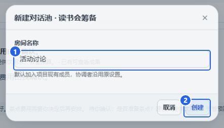
- 在 ① 房间名称 中填写名字，例如“活动讨论”。
- 点 ② 创建。
完成后会看到： 新房间出现在这个项目下，并自动打开。项目已有的AI会加入新房间，可以直接开始聊。
3. 添加 AI：先让一位助手能回复
点左侧 成员管理，再点页面右上方的 添加 AI。
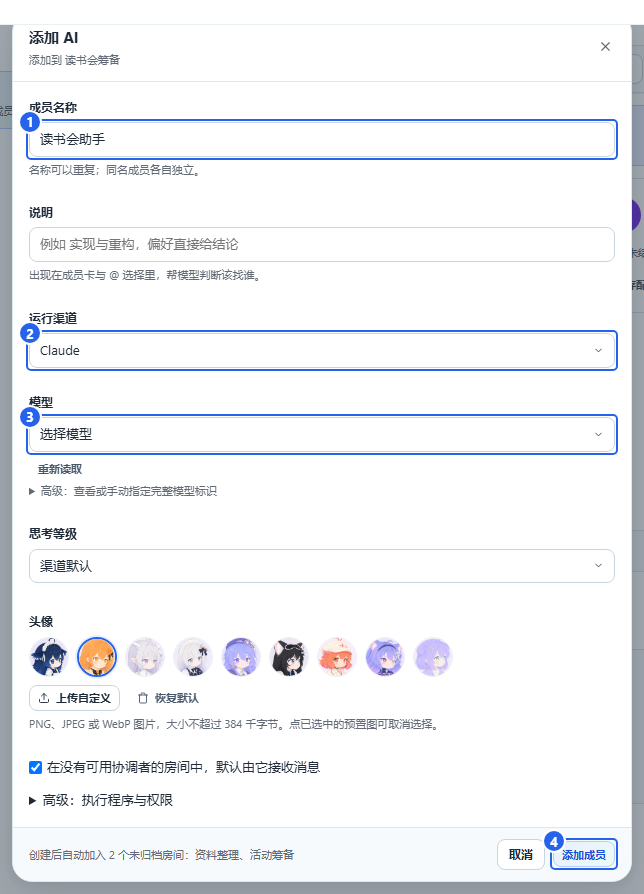
- ① 成员名称：给助手起一个你认得的名字，例如“读书会助手”。
- ② 运行渠道：选这台电脑上已经安装并配置的 Claude、Codex、DeepSeek Harness 或 Pi。
- ③ 模型：点下拉框，从列表里选一个模型。第一次使用时，其他项目可以保持默认。
- 点 ④ 添加成员，回到房间聊天。
完成后会看到： 成员列表里出现新助手，房间也能使用它。发一句“你好，请介绍一下你能帮我做什么”，就可以开始对话。
渠道、模型和名称有什么区别
| 项目 | 用来做什么 |
|---|---|
| 成员名称 | 你在聊天里看到的名字，也用来指定谁来做事。 |
| 运行渠道 | 众说连接AI所用的程序，例如 Claude、Codex、DeepSeek Harness 或 Pi。账号及模型配置在对应程序中完成。 |
| 模型 | 这个渠道提供的具体AI，添加时从下拉框选择。 |
模型列表为空时： 先在对应的渠道程序中完成安装和配置，再回到这里点 重新读取，选择模型。切换渠道时，旧模型和思考等级会清空；默认程序随渠道切换，Harness 为 dsh，Pi 为 pi。
使用 DeepSeek Harness 或 Pi
DeepSeek Harness： 支持官方 @deepseek-ai/dsh@0.2.1-rc.5 和 0.2.2-rc.1。先安装其中一个版本及其要求的 Node.js、包管理工具。自众说 beta.32 起，安装或升级众说时会自动检测 Harness 并安装或升级众说专用的连接组件，已有组件内容一致时只做就绪检查。未安装 Harness 时跳过；之后再安装 Harness，或自动配置失败时，可打开众说安装目录内的 runtime-tools/deepseek-harness/setup.cmd 重试。安装器不替你安装 Harness，也不修改其他应用的 profile。众说固定使用 zhongshuo profile，请先让需要的供应商、模型和 MCP 配置在该 profile 生效，再回众说读取模型并添加成员。
连接组件升级至 0.1.4 后，众说今后新建的 Harness 会话会单独保存，不再出现在 Harness 的“未分组”等普通会话列表中；众说内仍可正常聊天和续聊。已有会话保留原来的位置和显示方式。
从源码运行时，先执行 node scripts/build-dsh-runtime.mjs，再执行 node scripts/setup-deepseek-harness.mjs --install --artifact-dir dist/dsh-runtime。找不到程序时可在高级设置填写实际 CLI 路径。
Harness 的配置按 profile 区分。dsh web 的设置通常写入 web profile，不会自动搬到众说的专用 profile。专用配置文件为 $DSH_HOME/profiles/zhongshuo/cordis.patch.yml；未设置 DSH_HOME 时位于用户目录下的 .dsh/profiles/zhongshuo/cordis.patch.yml。按 Harness 官方说明添加所需供应商或 MCP 条目，并保留已有供应商、默认模型和插件条目，避免用单段配置覆盖整份文件。无需把其他 profile 的权限或全部配置复制过来。
Pi： 安装官方 Pi CLI，在 Pi 内完成供应商和模型配置，再回众说选择 Pi。Pi 无需安装众说连接插件。众说为不同任务建立独立会话，续接时核对原会话编号与目录；原会话缺失会明确失败，不会自动创建替代会话。
这两种渠道均不要求安装 Magpie。官方直连、其他网关或本地服务按对应 CLI 的供应商配置方式接入，众说不预置个人网关地址、模型或密钥。MCP 和 Skill 也沿用对应 CLI 的配置。Pi 的 MCP 可以通过默认 codemode 调用，或按原生配置选择 direct 展示；不要仅因界面里没有同名独立工具就判断 MCP 不可用。修改 Pi 的用户级或项目级 MCP 配置后，已排队的旧执行会要求重新确认当前配置，避免默默采用不同工具设置。
Windows 上，Harness 官方桌面版安装后提供的 dsh 入口可直接使用，也可以在高级设置选择 DeepSeek Harness.exe。Pi 兼容官方安装器和 npm 全局安装；默认程序仍为 pi。已安装好时无需重复安装 CLI，众说安装器会自动配置 Harness 连接组件。
密钥由各自 CLI 管理，无需填进众说。两种渠道当前使用原生完整权限；只读、项目受限编辑暂未开放。Harness 连接组件 0.1.2 和官方 Pi 1.4.0 支持结果格式补交，补交时使用独立新会话，禁用所有工具，仅整理已有输出，不重复执行原任务。Pi 无需额外插件；其他版本在补交前会提示未认证。若提示 Harness 连接组件需要升级，运行新版安装目录中的 runtime-tools/deepseek-harness/setup.cmd 后再继续任务。旧失败任务不会自动重跑，可在原对话串点击 继续任务。
修改已有AI
进入 成员管理，点对应成员卡片（或卡片上的 AI设置…）直接打开 AI 设置。修改渠道或模型后，点 保存 AI 设置。
Claude、Codex 只需要阅读和解释资料时，可以展开 高级：执行程序与权限，选择只读模式；需要修改文件时，选择对应的编辑权限。Harness、Pi 当前选择原生完整权限，旧的受限配置保留原值，不能通过切换渠道自动升级授权。
4. 发消息、看回复，再接着问
发出第一条消息
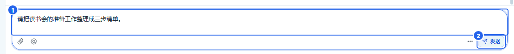
- 在 ① 输入框 写清楚要做什么。例如：“请把读书会的准备工作整理成三步清单。”
- 点 ② 发送。
- 中间会出现一张新卡片，AI的回复会放在这件事的对话里。
需要分工的工作，协调者会先提交同伴与自己各自的工作步骤，再开始实施；没有依赖的步骤一起排队。文件修改的并行方式可在项目设置的 文件修改 → 同时修改文件的任务 中选择：默认按对话串区分、单写者，或允许不同成员并行。正在执行或结果待确认的工作结束后才能切换；并行工作应分别负责不同文件。
执行数量在 设置 → AI 设置 → 同时运行的 AI 中调整，可分别设置全局、每项目和同渠道的上限，默认都是 4，范围为 1–32。超出数量的任务会排队；调低不会中断已经开始的任务。文件写入策略、前后依赖和未解除的任务保护仍然生效。
还可以这样说：
帮我把这段通知改得更简短，语气亲切一点。
阅读附件，列出时间、地点和需要准备的物品。
打开完整回复，在原处追问
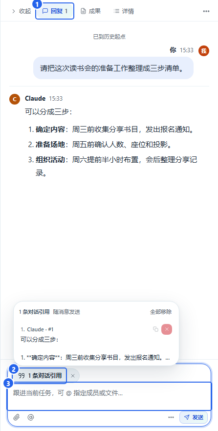
- 在房间点卡片或回复数，打开右侧对话。在 ① 回复 页签阅读AI的完整答复。
- 想针对某条回复提问时，点消息下方的 引用；输入区出现 ② 对话引用。房间首页消息卡片下方的 引用 也走同一套引用卡片，不会把原文粘进输入框。把鼠标移到这里，浮窗会显示引用的来源和摘要。点气泡末尾常显的 ×，可直接删除本次草稿的全部对话引用；浮窗里也可以单独移除其中一条。
- 在 ③ 右侧输入框 补充要求，例如：“把第二步再拆细一点。” 引用原文会随消息一起发送，输入框只需要写新要求。
- 点右侧的 发送，新的回复会接在同一串里。
记住这一区别： 房间底部输入框用来开始新事情；右侧对话串的输入框用来继续当前这件事。
向上翻看历史时，新回复不会把你拉回底部；点浅色的 有新消息 按钮可回到最新回复。
对话较长时，先显示最近的消息。向上翻到顶部，点 加载更早消息 可继续补读，原来的阅读位置会保留；读取失败时可以重试。搜索、收藏或引用跳到较早的消息时，会先补读对应历史再定位。
同一个AI在不同对话串里使用独立会话，可以同时处理工作；同一串里连续发送的要求依次处理。默认完整权限下，同一项目的不同串也可以同时修改文件；重叠执行期间的改动会保留快照，需要核对后处理，不能直接自动撤销。受限文件编辑仍按目录排队；结果尚未确认的执行会继续保留保护。停止一件事只影响对应任务。
打开当前对话串的 回复 时，未读标识立即更新；切到其他串、查看成员或成果、窗口在后台时，不会把新回复自动标成已读。
最新一条AI文字回复保持完整展开，方便直接看到待你确认的问题；较早的长回复仍可点 展开全文 阅读。房间名称前的受阻空心标记和执行三角使用项目蓝色，名称前没有标记表示当前没有未结束任务。
让AI记住共同约定
可以在对话里说：“记住：我们这个读书会通常安排在周六下午。” AI会把适合复用的结论作为笔记交给程序保存，同一房间中该AI的后续工作可以参考。程序合并新增笔记，不让多个会话互相覆盖；出现不同说法时保留来源，AI应先核实再使用。 笔记暂时保存失败时，其他工作继续进行，程序会稍后重试；已经成功的工作不会因此重新执行。
笔记不会自动包含整段聊天。其他房间、其他AI和私信分别保存，不把私信内容带进房间。
指定谁来做，或让多人配合
点输入区的 @ 选择成员，再写要求。例如：
同名成员会带上可区分的标记；从候选列表选择哪一位，消息就发送给哪一位。旧草稿里的名字无法唯一确定成员时，请重新从列表选择。
@Claude 先整理活动方案，然后请 Codex 核对时间安排有没有冲突。
请你们分别给一个建议，最后把相同点和分歧整理给我。
普通提问直接发送即可。需要谁先做、谁再检查，把顺序写在要求里。
多人互评或分歧讨论中，某位成员未能启动时，会保留其他成员已经完成的回复并说明缺口。处理原因后，在原串继续；不会让一位成员反复代替缺席成员完成讨论。
普通 @全体 会把本次要求分别发送给全体成员，各自的实际回复按本人身份显示。在对话串里，收件范围是当前串的成员；房间里其他未加入本串的成员不会因此收到。成员明确选择保持静默时，不会产生空消息。
需要大家先独立分析、互评分歧，再形成整合结论时，使用发送菜单的 独立研讨。普通 @全体 不会自动追加这套流程；需要谁先做、谁再核对时，可向协调成员说明顺序。
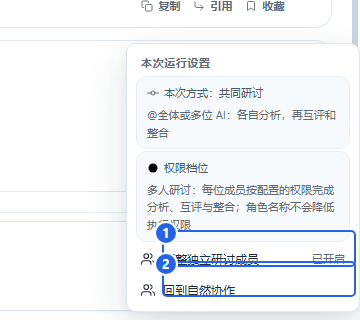
已开启独立研讨时，输入区右侧会出现 独立研讨 · N人 芯片；点它可以调整参与名单。本次运行设置（⋯） 里的 回到自然协作 用来关闭本次独立研讨，成员名单不再在运行设置里重复调整。正文和已写好的要求会保留。
AI需要你确认时
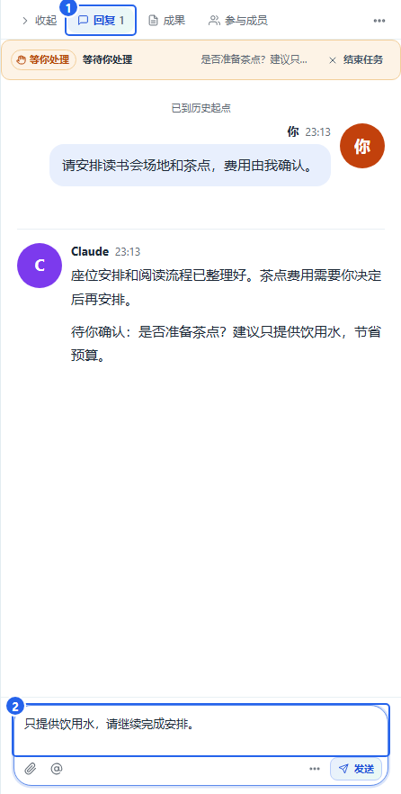
- 在 ① 回复 中阅读具体问题和建议。已经完成的内容会保留，不依赖你答复的独立步骤可以继续。
- 在 ② 原串输入框 写明选择，例如：“只提供饮用水，请继续完成安排。” 然后发送。
- 只有一个步骤在等你答复时，会接着这个步骤做；若多位AI同时提问，用 @ 指定本次答复的成员。
- 同一位AI有多个问题时，按提问先后逐条答复：发送第一条答复后，再回答下一条。已经完成的文件会随原步骤继续交付，无需让AI重新做一遍。
房间卡片已经显示等待处理时，打开对话串会立即沿用已确认的状态横幅，再更新最新状态。历史消息读取较慢或失败时，任务状态仍会独立刷新。
复核发现可修正的问题时，AI会继续修改并重新核对，不再因“已经返工过一次”结束。若调用次数预算不足，或反复修改仍无进展，会明确说明情况并请你确认下一步。需要调整预算时，打开 设置 → AI 设置；旧运行的预算记录会保留，调整后在原对话提出继续要求。
5. 私信：和一位AI单独聊
点左侧 私信，进入一对一聊天。
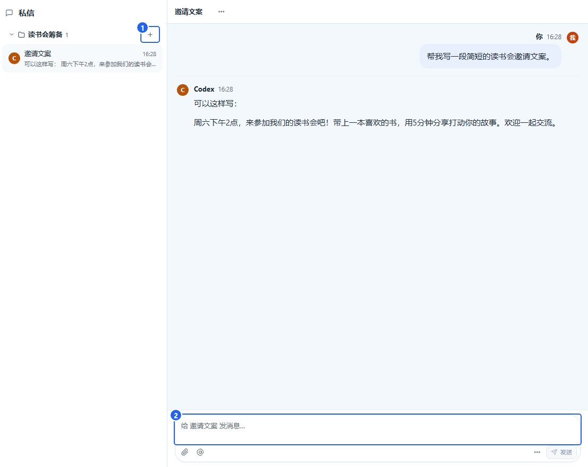
侧栏中显示的项目会各自成为一个分组。项目与组内会话按最近回复时间排列；当天显示 13:14，昨天、前天分别显示对应文字，更早的回复显示日期。没有回复时沿用最近消息时间，没有消息则不显示时间。
- 点对应项目分组右侧的 ＋，直接点击一位成员，立即进入私信。
- 在底部输入框写问题，点 发送。
- 以后继续同一话题，点私信列表中的这条会话。
什么时候用私信： 想单独请一位AI改文案、解释问题或讨论想法时。
每次新建私信都是独立话题。想让AI接着之前的内容做，就回到之前那条私信中继续说。
置顶常用私信： 鼠标移到会话上，直接点右侧 图钉 按钮，移到私信列表最上方的 置顶 区，原项目分组不重复显示；再次点图钉取消置顶，回到原分组。置顶项显示所属项目，点击就会打开对应会话，跨项目也可以直接进入。置顶区独立于项目分组显隐，头像、回复时间和未读提示继续显示。
展示项目的私信总数超过20条时，各项目的普通私信默认显示5条，点击 显示更多 每次再显示10条，直到全部显示。总数20条及以下全部显示。已归档列表按归档私信总数使用相同规则，各项目的展开数量分别计算。
私信只用圆形数字提示未读，不重复显示蓝点；超过99条显示 99+。自己发出的消息不计入未读。当前私信在前台、可见且停留在底部时，新回复显示后自动标为已读；上翻历史、查看其他会话或窗口在后台时保留未读。
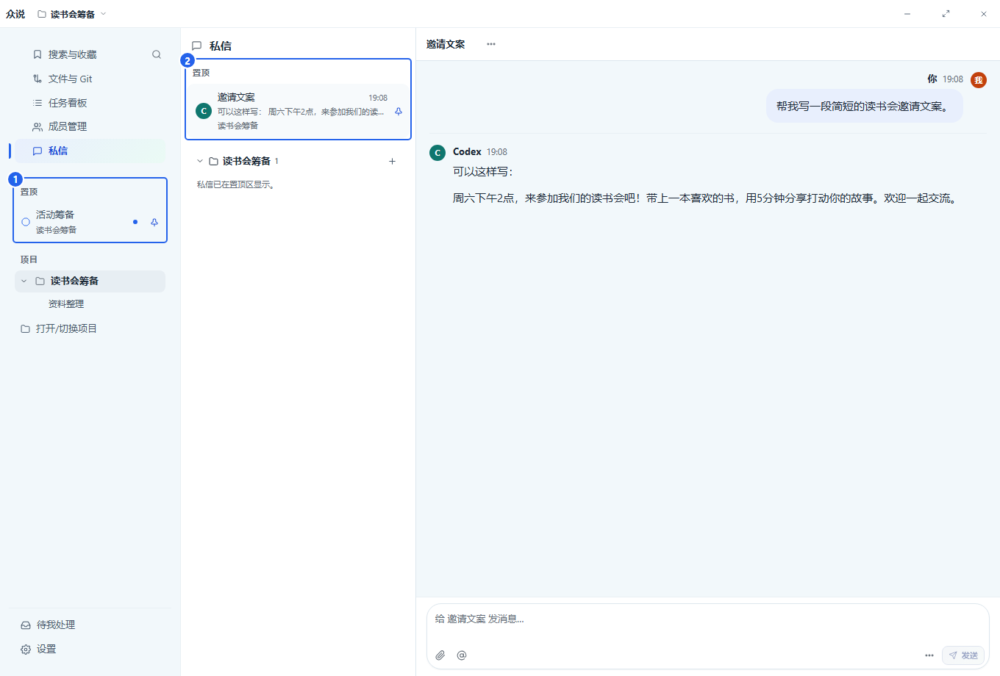
6. 看进展、停止任务和继续任务
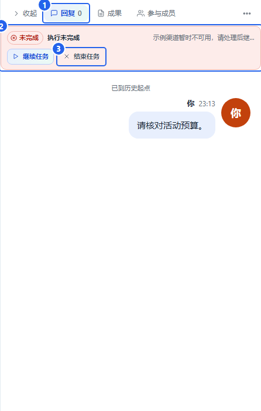
- 打开这件事的对话串，点 ① 回复 阅读进展。
- 查看顶部的 ② 任务状态，按提示继续或结束任务。
点 参与成员 可直接查看本串成员，使用 移出 或 添加到本串 调整名单。成员页只显示名单和管理操作。
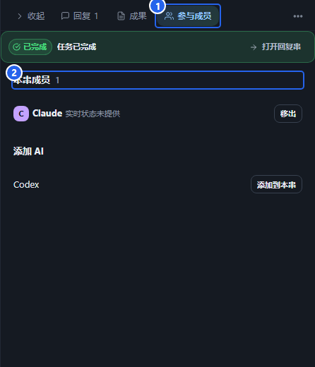
先看状态，再决定下一步：
| 状态 | 下一步 |
|---|---|
| 正在执行、排队中、等同伴 | 等待回复，在原串阅读最新进展。 |
| 等你处理 | 读任务提出的问题，在原串补充信息。 |
| 等待你验收 | 打开成果，检查后确认或提出修改意见。 |
| 已完成 | 阅读回复和成果；还想调整就继续追问。 |
| 未能开始、未完成 | 查看原因，处理后点“按原请求继续”或“继续任务”；不再需要这件事时点“结束任务”。 |
| 执行中断 | 直接点“继续任务”，无需重启 Windows 或填写原因。 |
| 已停止 | 已有内容可以继续查看，需要时再继续任务。 |
已完成的对话直接显示回复，完成状态可在房间卡片中查看；需要你验收时仍会显示提示。
如果原因提示执行配置变化，先查看列出的变化来源。切换主题和更新项目展示状态不再影响新请求；真正修改渠道、权限、工具或模型后，用 按原请求继续 或在原串发出新要求，程序会重新读取当前配置，旧失败记录保留。
AI 仍在执行时，等待超过 20 分钟也会继续处理。想主动限制一次执行的时长，可以在项目设置中设置运行时限；默认不限制。
回复串顶部只保留一条任务提示，集中说明原因和下一步。失败时可在同一条提示中 继续任务 或 结束任务。确认没有开始处理的情况显示 未能开始；已经执行但未完成的情况保留失败记录，已有消息和文件仍可查看。
AI 连接程序意外退出、应用关闭时未收到完整结果，或任务信息无法确认归属时，当前执行会显示 执行中断。打开原任务，直接点 继续任务 即可，无需重启 Windows、填写原因，也无需先点“检查中断”或“解除占用”。
点继续后，程序会处理旧执行留下的占用，并按当前配置继续任务；仍有无法处理的阻塞时，会在原处显示具体原因。已有消息、文件和中断历史保留，未知结果不会被记为成功。需要了解中断情况时，可以阅读原串中已保存的答复和成果，不必先判断旧任务是否成功。
在 恢复任务 面板也可以直接点 继续任务。若想先看原对话，点 查看任务；成功定位后面板会自动关闭，定位失败时会在面板内显示原因，便于重试。只打开任务本身不会自动继续执行。
中断提醒只列出当前仍未完成、且最新一次运行仍中断的任务。任务继续后已成功、已经完成或已经结束时，不再因旧中断记录反复提醒；已有回复和成果继续保留。历史中的未知结果仍按原事实展示，文件保护和撤销事项可在各自入口查看。
想让AI停下来
执行过程中，在这件事的输入区点 停止任务，等待状态变为 已停止。
停止后，已有聊天、成员发言和文件都会保留。需要接着做时，在原对话串发送 继续 或新的要求，也可以点 继续任务。程序会启动新一轮，旧的排队请求不会自动重发；停止仍未结束时，请先等待状态更新。
如果执行已经失败、尚未开始，或在等你答复而你不想继续，点状态栏的 ③ 结束任务。任务会结束，未完成标识随之消除；已有消息、文件与失败记录保留。存在仍在执行或结果待核实的工作时，先停止或完成核实，再结束任务。
想继续做
打开原任务，点 按原请求继续 或 继续任务；部分完成或中断的任务也能继续，无需填写原因。中断后继续也不要求重启 Windows 或先手动解除占用。提示 补交已有结果 时，按该入口补交。旧执行记录会保留；只有你明确点击继续或发送新要求后，才会继续处理。如果要调整要求，也可以在原对话串里直接补充说明。
7. 找回旧内容：搜索、收藏和任务看板
按关键词找
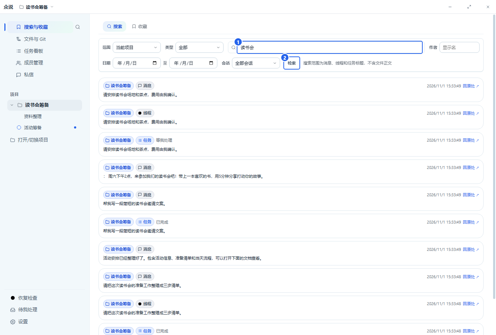
- 点左侧 搜索与收藏。
- 在 ① 搜索框 输入记得的词，例如“读书会”。
- 点 ② 检索，或按回车。
- 点结果，回到那条消息、任务或文件。
结果太多时，点工具栏的 更多筛选，用日期或会话缩小范围；再点一次即可收起。常用消息可以在消息下方点 收藏，以后到收藏页找。
一起看所有任务
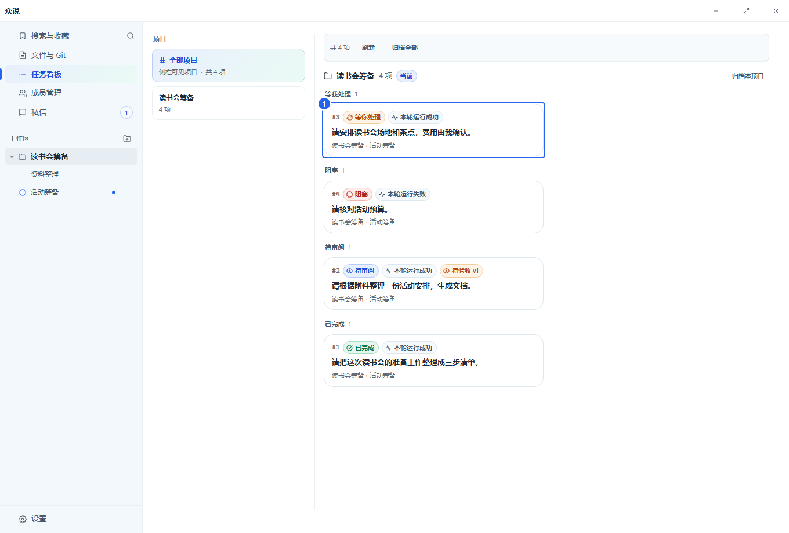
点左侧 任务看板，按状态看任务，点卡片打开。左侧 待我处理 集中显示需要你回答或验收的事情。
快捷找入口： 按 Ctrl+K，输入成员、任务或页面名称，用方向键选中后按回车。
8. 查看成果、保存文件和要求修改
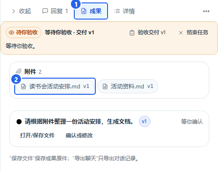
- 在原对话串里点 ① 成果。
- 点 ② 文档名称，打开文件预览。
- 阅读内容；要保存到电脑时，点预览右上角的 更多文件操作，选择 下载原文件 / 另存为…，再选择保存位置并点 保存。
完成后会得到： 一份保存到你所选位置的文件，可以在众说之外打开和使用。
内容还想改
回到原对话串的输入框，直接说明修改点。例如：
请把活动流程改成表格，再加一列“负责人”，其他内容保留。
出现“等待你验收”时
点 验收交付 或成果中的 确认或修改，先看文件，再选择：
- 满意：点 确认完成。
- 需要调整：点 按这些意见修改，填写具体修改要求并提交。
9. 发附件、预览文件和引用文字
把资料交给AI
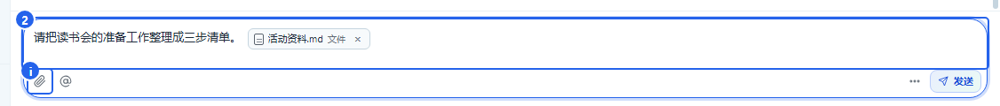
- 点 ① 回形针，选择文件；也可以把文件拖进输入框。
- 等文件名出现在输入区，表示附件准备好了。
- 在 ② 输入框 写要求，例如：“请根据附件整理活动安排。”
- 点 发送。
图片也按同样方式直接附带发送：所有 AI 成员都能收到图片，图片内容随消息一起交给 AI，不需要在发送前更换成员或另行选择接收方式。图片在对话里会直接显示预览，点一下可以打开大图查看。只发图片、不写文字时，气泡会贴着图片显示，不会有空荡荡的留白。
图片的复制与引用： 在对话里的图片上点右键，可以直接 复制图片，或 复制图片路径；共享预览里的大图也可以右键 复制图片。复制带图片的消息、或引用带图片的消息时，内容里会自动带上图片在本机的完整路径，方便你或 AI 之后直接找到这张图片。
AI 生成的 Word、Excel、PPT 和 PDF 交给其他成员时，程序会自动读取保存的原件并准备提取内容，无需先手动打开预览。原件损坏或无法解析时，会保留文件并说明原因。
看文件，保存或引用其中一段
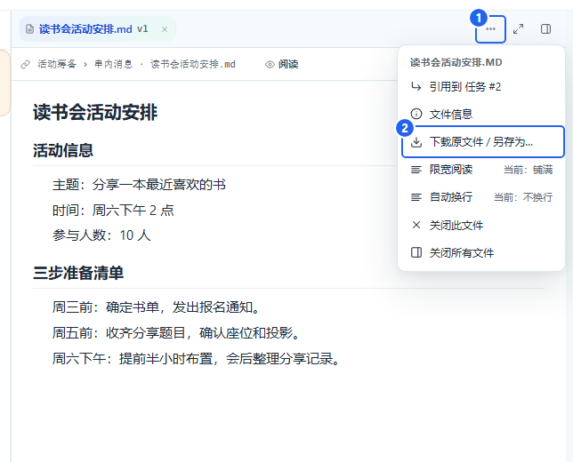
点消息或成果中的文件名，就能打开预览。
- 保存文件： 点图中 ① 更多文件操作，再点 ② 下载原文件 / 另存为…，选择保存位置并保存。
- 问其中一段： 先选中文字，再使用 引用，补上问题后发送。例如：“这段能不能改得更简短？”
- 其他操作： 在 ① 更多文件操作 菜单里还能找到引用、文件信息、阅读宽度、关闭文件等入口。要请AI修改时，把要求发到原对话串。
消息附件可在预览的 ⋯ → 评论此文件 中留言，提交后保存到附件的来源会话，显示为消息和附件卡。它不会自动派发给 AI。这是对整份文件的评论，当前界面没有选区定位批注入口。
对话里的文字也可以引用：选中一段后点右键，选择 复制所选文字 或 引用到当前任务。把鼠标移到输入区的 对话引用 上，可在浮窗查看来源和摘要；点气泡末尾的 × 可直接清除本次对话引用。移除引用只影响这次草稿，正文、附件与原消息保留。
10. 浏览项目文件
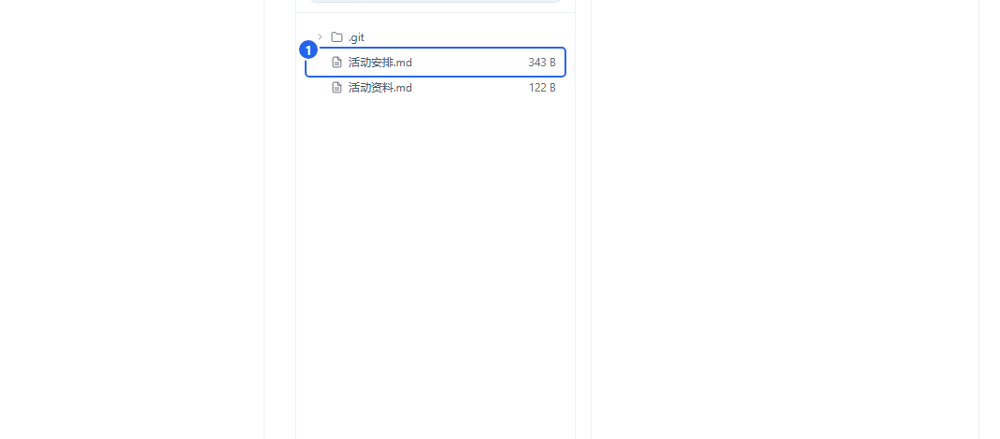
- 点左侧 文件与Git。
- 在 ① 文件列表 找文件；点文件名查看内容。
- 要请AI处理某个文件，回房间说明文件名和要求，例如：“阅读活动资料.md，整理一份准备清单。”
Git是做什么的： 如果你的工作文件夹使用Git管理版本，这里还可以查看代码改动、提交记录和分支。日常整理资料、聊天和写文案，可以先使用文件浏览部分。文件夹不是 Git 仓库时只会中性说明，不会报错，也不影响文件浏览与预览。
项目改动记录沿用Git的忽略规则，安装包、依赖和运行数据等被忽略的内容不混入源码改动；Git中已经跟踪的文件仍会记录。AI交付的文档和附件可以从原回复打开、保存。
11. 调整外观、通知和调用预算
点左侧 设置。所有设置都在同一页里，从上往下依次是 外观 → 通知 → AI 设置 → 数据与存储 → 帮助与关于；右侧搜索框可以直接搜到具体那一项。设置页只保留标题、控件和必要的状态/错误提示，不再显示说明性小字。
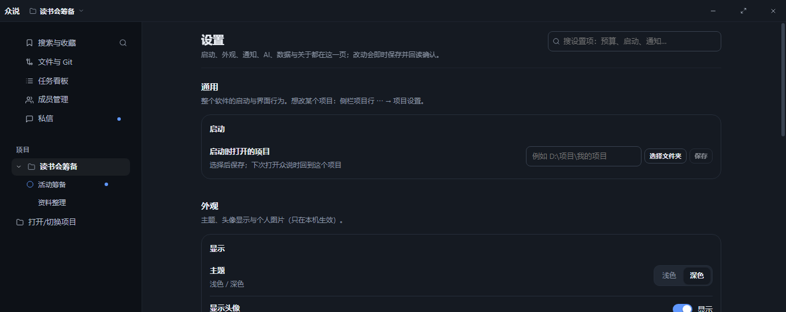
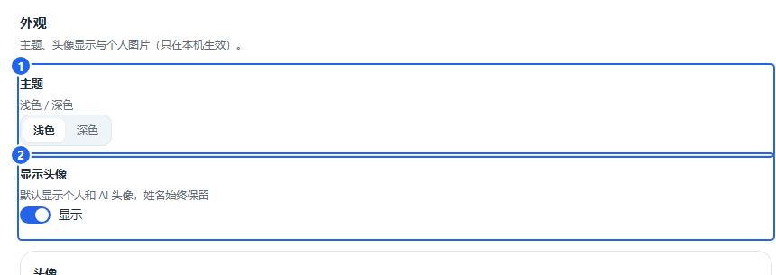
- 往下找到 外观，在 ① 主题 选择浅色或深色。
- 头像默认显示，可在 ② 显示头像 开关调整。
- 在 我的名字 里填写你希望对话里显示的称呼，例如“小周”，再点 保存。之后你自己发的消息、引用来源和私信里的署名都会显示这个名字；留空保存则恢复显示“你”。
在 我的头像 里可以直接点预置头像，也可以点 上传自定义 选择 PNG、JPEG 或 WebP 图片（≤ 384 KiB）。需要恢复时点 恢复默认。
通知： 在 通知 一段里有 桌面通知 总开关。关掉后不再弹出系统通知，任务和未读照常保留。
操作手册： 在 帮助与关于 一段点 打开手册，手册会在系统默认浏览器里打开；同处还有 GitHub 仓库 和 产品主页 两个入口。
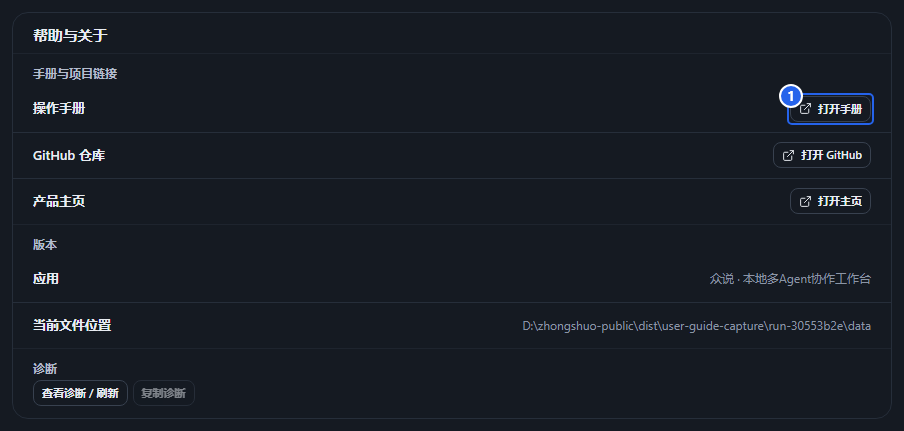
限制一次请求的 AI 调用次数
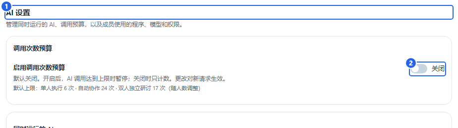
- 在 AI 设置 一段找到调用预算（也可以在设置搜索框输入“调用预算”）。
- 需要限制次数时，打开 ② 启用调用次数预算。返回房间、回复串或私信，输入框旁会显示本次的次数上限。
- 不需要限制时，关闭这个开关。输入框会隐藏预算提示，可以直接发消息。
开关默认关闭。设置对新发出的请求生效，已经开始的任务沿用开始时的设置。
12. 备份、恢复和收起旧项目
备份聊天与资料
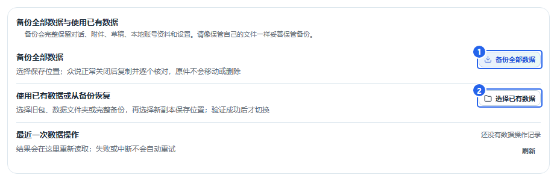
- 进入 设置 → 数据与存储。
- 点 ① 备份全部数据，选择保存备份的位置。
- 按提示关闭众说，等待复制完成。
使用备份或已有数据
- 在同一页面点 ② 使用已有数据或从备份恢复。
- 选择已有数据或完整备份，再选择新副本的保存位置。
- 复制完成后，重新打开众说，查看项目和历史。
收起不常用的项目或房间
在项目或房间的菜单里选择 归档。需要重新使用时，到 设置 → 数据与存储 → 归档管理 恢复。仍在排队、执行或等待处理的任务需先结束；项目里已停止且没有排队请求的失败记录可以保留归档。归档后的房间不会开始旧的排队工作。
13. 点了发送后，该看哪里
- 自己的消息已经出现在对话里： 说明已经收到，接着看这件事的状态。
- 提示发送结果待确认，并出现“查询刚才的发送”： 点这个按钮。找到后会跳到原消息，继续在那里聊。正常发送不会显示查询入口。
- 出现明确错误： 根据提示处理，例如完成账号登录或重新选择可用模型，再回原任务继续。
遇到临时网络或模型服务故障时，众说会自动重试，最多重试 5 次。等待期间可继续查看活动；重启众说后会接着原来的次数处理。五次仍未成功时，按显示的原因处理，再在原对话继续。
普通历史消息可以用左侧 搜索与收藏 查找。
14. 常见问题：从这里继续操作
想随时打开这份手册
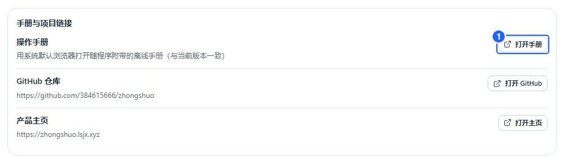
点 设置 → 帮助与关于 → 打开手册，手册会在系统默认浏览器里打开。也可以在设置搜索框输入“手册”或“教程”。
AI还没回复
打开原对话串，阅读最新回复，并查看顶部任务状态。需要补充信息时，在原串回答；需要停止时点 停止任务。
提示模型或渠道不能用
进入 成员管理，点该成员卡片（或 AI设置…），检查所选渠道和模型。账号登录失效时，在对应渠道重新登录，再回原任务点 按原请求继续。
想让AI真正修改文件
在原串写清楚文件名和修改目标，例如：“请修改活动安排.md，把开始时间改成下午3点。” 到成员的 AI设置… → 高级：执行程序与权限，选择允许编辑项目的权限。
关闭后再打开，怎么接着聊
在左侧点原来的项目和房间，再打开原卡片。私信则从左侧 私信 列表进入原会话。
换了一台电脑，怎样带上聊天
先在原电脑按 第 12 章 备份，再在新电脑的 设置 → 数据与存储 中选择恢复。恢复完成后即可看到原项目和历史。
需要反馈一个问题
截下出问题的界面，写清楚“点了哪个按钮、出现了什么、希望得到什么”。版本信息在 设置 → 帮助与关于；同一页的 GitHub 仓库（https://github.com/384615666/zhongshuo ）可以提交问题，产品主页（https://zhongshuo.lsjx.xyz ）有功能说明和界面示例。